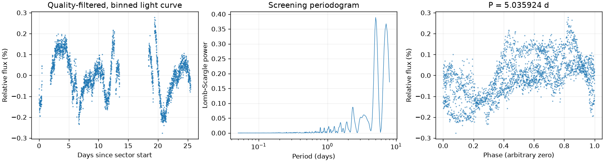

Sector 85 · 5.035924 天
相对幅度估计 0.2042% · 有效点数 13183

Screening peak only; no correlated-noise false-alarm calibration or physical classification.
这是筛选报告，未确认新发现，也不能代替 VSX 提交材料。
图中依次为亮度随时间变化、候选周期强度和折叠后的重复形状。相位零点仅供展示；纵轴是相对通量，不是标定星等。
相对幅度估计 0.2042% · 有效点数 13183

Screening peak only; no correlated-noise false-alarm calibration or physical classification.
{
"ra_deg": 38.2639707490846,
"dec_deg": 40.594017125732,
"catalog_queries": [
{
"source": "VSX",
"status": "historical_snapshot",
"checked_at": "2026-11-09",
"note": "Archived neighborhood query only; identity and novelty not fully reviewed."
}
],
"vsx_neighbors": [
{
"Name": "Gaia DR3 338344741757035008",
"RA2000": "38.25730",
"Declination2000": "40.60645",
"ProperMotionRA": "3.5100",
"ProperMotionDec": "-5.6350",
"VariabilityType": "E",
"Period": "0.233048",
"MaxMag": "19.77 G",
"MinMag": "20.24 G",
"Discoverer": "Gaia collaboration",
"Category": "Variable",
"OID": "8714743",
"Constellation": "And",
"sep_arcsec": 48.329846459888536
},
{
"Name": "Gaia DR3 338344093218577536",
"RA2000": "38.26516",
"Declination2000": "40.57019",
"ProperMotionRA": "3.3900",
"ProperMotionDec": "0.6030",
"VariabilityType": "DSCT|GDOR|SXPHE",
"MaxMag": "15.10 G",
"MinMag": "15.12 G",
"SpectralType": "F",
"Discoverer": "Gaia collaboration",
"Category": "Variable",
"OID": "2820870",
"Constellation": "And",
"sep_arcsec": 85.839257971202
}
],
"notes": [],
"errors": [],
"repeatability": {
"status": "insufficient_epochs",
"fractional_spread": null
},
"localization": null,
"submission": {
"name": null,
"ra_deg": null,
"dec_deg": null,
"coordinate_source": null,
"coordinate_epoch": null,
"variability_type": null,
"period_days": null,
"period_error_days": null,
"epoch": null,
"epoch_time_standard": null,
"epoch_event": null,
"max_magnitude": null,
"min_magnitude": null,
"passband": null,
"magnitude_source": null,
"mean_magnitude": null,
"amplitude_magnitude": null,
"amplitude_passband": null,
"discoverers": null,
"references": null
}
}